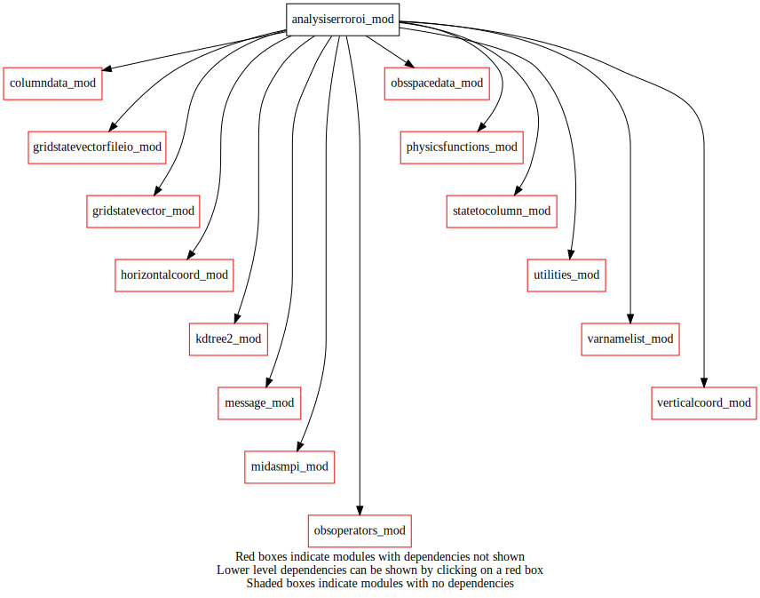
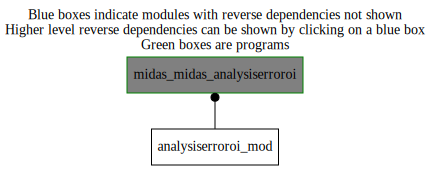

Dependency Diagrams:
 Direct Dependency Diagram¶
 Reverse Dependency Diagram¶
Description
MODULE analysisErrorOI (prefix=’aer’ category=’1. High-level functionality’)
- Purpose
Calculate the analysis-error standard deviation. The method used is Optimal Interpolation, where it is assumed that only a subset of the total number of observations influence the analysis at a given grid point. By default, everything in the module is private. The data is accessed by external subroutines through public subroutines and functions calls.
Quick access
- Types
- Variables
- Routines
Needed modules
columndata_mod: MODULE columnData_mod (prefix=’col’ category=’6. High-level data objects’)
gridstatevector_mod: MODULE gridStateVector_mod (prefix=’gsv’ category=’6. High-level data objects’)
gridstatevectorfileio_mod: MODULE gridStateVectorFile_mod (prefix=’gio’ category=’4. Data Object transformations’)
kdtree2_mod: MODULE kdtree2_mod (prefix=’kdtree2’ category=’8. Low-level utilities and constants’)
midasmpi_mod: MODULE midasMpi_mod (prefix=’mmpi’ category=’8. Low-level utilities and constants’)
obsspacedata_mod: MODULE obsSpaceData_mod (prefix=’obs’ category=’6. High-level data objects’)
physicsfunctions_mod: MODULE physicsFunctions_mod (prefix=’phf’ category=’8. Low-level utilities and constants’)
statetocolumn_mod: MODULE stateToColumn (prefix=’s2c’ category=’4. Data Object transformations’)
varnamelist_mod: MODULE varNameList (prefix=’vnl’ category=’7. Low-level data objects’)
utilities_mod: MODULE utilities_mod (prefix=’utl’ category=’8. Low-level utilities and constants’)
horizontalcoord_mod: MODULE HorizontalCoord_mod (prefix=’hco’ category=’7. Low-level data objects’)
verticalcoord_mod: MODULE verticalcoord (prefix=’vco’ category=’7. Low-level data objects’)
obsoperators_mod: MODULE obsOperators_mod (prefix=’oop’ category=’5. Observation operators’)
message_mod: MODULE message_mod (prefix=’msg’ category=’8. Low-level utilities and constants’)Types
- type analysiserroroi_mod/struct_neighborhood¶
- Type fields
% bodyindex (*) [integer ,pointer]
% headerindex (*) [integer ,pointer]
% numobs [integer ]
Variables
- analysiserroroi_mod/aer_backgroundetiket [character,parameter/public]¶
Subroutines and functions
- subroutine analysiserroroi_mod/aer_analysiserror(obsspacedata, hco_ptr, vco_ptr, trlmfilename)¶
- Purpose
Calculate analysis-error variance.
- Arguments
obsspacedata [struct_obs ,in]
hco_ptr [struct_hco ,pointer]
vco_ptr [struct_vco ,pointer]
trlmfilename [character ,in]
- Called from
- Call to
utl_abort(),utl_isnamelistpresent(),msg(),gsv_varnameslist(),gsv_allocate(),gio_readfromfile(),gsv_copymask(),col_setvco(),col_allocate(),obs_numheader(),s2c_tl(),gsv_zero(),gsv_deallocate(),kdtree2_3dposition(),kdtree2_create(),findobs(),gsv_getnumlev(),vnl_varlevelfromvarname(),obs_bodyelem_r(),oop_icescaling(),s2c_getweightsandgridpointindexes(),phf_calcdistance(),utl_matinverse(),gio_writetofile(),col_deallocate()
- subroutine analysiserroroi_mod/findobs(obsspacedata, statevectorbkgnd, numobs)¶
- Purpose
Find all observations used for the local analysis.
- Arguments
obsspacedata [struct_obs ,in]
statevectorbkgnd [struct_gsv ,in]
numobs (ni,nj) [integer ,out]
- Called from
- Call to
utl_tmg_start(),obs_numheader(),obs_headelem_i(),obs_bodyelem_i(),s2c_getfootprintradius(),s2c_getweightsandgridpointindexes(),utl_abort(),obs_headelem_r(),kdtree2_3dposition(),kdtree2_r_nearest(),utl_tmg_stop()
- subroutine analysiserroroi_mod/aer_dayssincelastobs(obsspacedata, hco_ptr, vco_ptr, trlmfilename)¶
- Purpose
Update the field “days since last obs” with the newly assimilated obs.
- Arguments
obsspacedata [struct_obs ,in]
hco_ptr [struct_hco ,pointer]
vco_ptr [struct_vco ,pointer]
trlmfilename [character ,in]
- Called from
- Call to
utl_abort(),gsv_allocate(),gio_readfromfile(),gsv_copymask(),col_setvco(),col_allocate(),obs_numheader(),s2c_tl(),gsv_getnumlev(),vnl_varlevelfromvarname(),obs_headelem_i(),obs_bodyelem_i(),s2c_getweightsandgridpointindexes(),gio_writetofile(),col_deallocate(),gsv_deallocate()
{kind=link}
{kind=link}